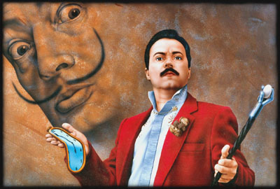
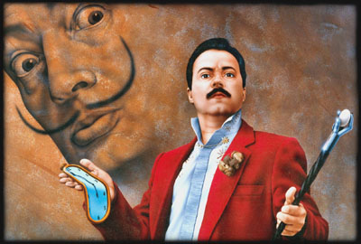

Notice biographique
Victor Sanchez naît à Gijon, en Espagne, le 17 décembre 1959. Il grandit à Bruxelles et, dès 1975, y fréquente l'Académie Royale des Beaux Arts, où il reçoit plusieurs premiers prix et diverses mentions tout au long de ses études. Par ailleurs, il complète sa formation en fréquentant l'Académie de Watermael-Boitsfort (croquis) et l'Académie d'Anderlecht (cours de dessin documentaire de M. Debie).
Diplômé de l'Académie en 1980, il perfectionne ses connaissances de l'image et de la lumière à l'Ecole de Photographie de la Ville de Bruxelles à Laeken. Parallèlement, il entame une carrière dans le domaine des arts graphiques et audio-visuels.
Dès 1990, il opte pour le statut d'illustrateur indépendant et collabore avec de nombreuses agences de publicité. Reconnu par le milieu professionnel pour sa technique irréprochable et l'excellence de son travail, il se spécialise dans l'illustration hyper-réaliste.
Après une première exposition collective en 1992, au Passage 44 à Bruxelles, l'artiste qui sommeille en lui se révèle. Depuis, les expositions se succèdent : Citadelle de Namur (1994), Galerie du Nid d'Aigle à Profondeville (1995), Galerie Art Cadia à Bruxelles (1996), Galerie des Tanneurs à Namur (1997), Centre International d'Art Contemporain à Liège (1998), Festival du Film Fantastique de Bruxelles (1999), Cinquième Biennale des Rencontres de l'Art Bruxellois (2000), Hotel Inter Continental de Bruxelles (2001), Galerie G-Loft à Bruxelles (2003 à 2005), Galerie Extrapole à Liège (2007), Galerie Artz 21 à Barcelone et Galerie Pictura Aeterna à Bruxelles (2008), etc.
Son art teinté de poésie et de surréalisme est accueilli très favorablement par de prestigieux critiques d'art, d'Anita Nardon à Stéphane Rey. Cité dans de nombreux ouvrages de référence, notamment le Dictionnaire des Artistes Plasticiens de Belgique de Paul Piron et l'Annuaire des Artistes et Galeries de Belgique, il conserve toutefois un œil critique sur son art. Cet infatigable perfectionniste, après avoir exploré l'érotisme subtil des corps drapés, ne cesse de réinventer les hymnes à la Femme, dans une peinture qui sort délibérément des sentiers battus.